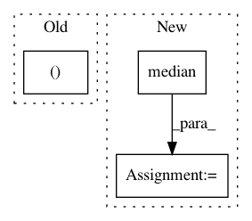

b7c2f6e9ccd65a53d8ae9aa0d3ee287ce9c93019,librosa/feature.py,,estimate_tuning,#,243
Before Change
bins = np.linspace(-0.5, 0.5, np.ceil(1./resolution), endpoint=False)
counts, tuning = np.histogram(residual, bins)
// return the histogram peak
return tuning[np.argmax(counts)]
After Change
// Only count magnitude where frequency is > 0
pitch_mask = pitch > 0
threshold = np.median(mag[pitch_mask])
return librosa.feature.pitch_tuning( pitch[(mag > threshold) & pitch_mask],
resolution=resolution,
bins_per_octave=bins_per_octave)
In pattern: SUPERPATTERN
Frequency: 3
Non-data size: 3
Instances
Project Name: librosa/librosa
Commit Name: b7c2f6e9ccd65a53d8ae9aa0d3ee287ce9c93019
Time: 2014-02-07
Author: brm2132@columbia.edu
File Name: librosa/feature.py
Class Name:
Method Name: estimate_tuning
Project Name: timvieira/arsenal
Commit Name: 3b84e8fc7a0d418254589693aa4fcdce0612f0b3
Time: 2018-01-17
Author: tim.f.vieira@gmail.com
File Name: arsenal/viz/learning_curve.py
Class Name: LearningCurve
Method Name: plot
Project Name: astroML/astroML
Commit Name: d1f932a01a3a2d73167dea9be55ffae747d1b66b
Time: 2018-11-30
Author: bsipocz@gmail.com
File Name: astroML/stats/tests/test_stats.py
Class Name:
Method Name: test_median_sigmaG